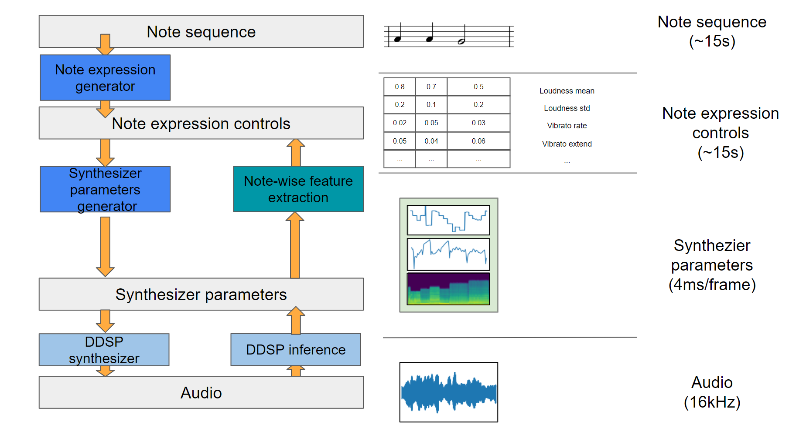
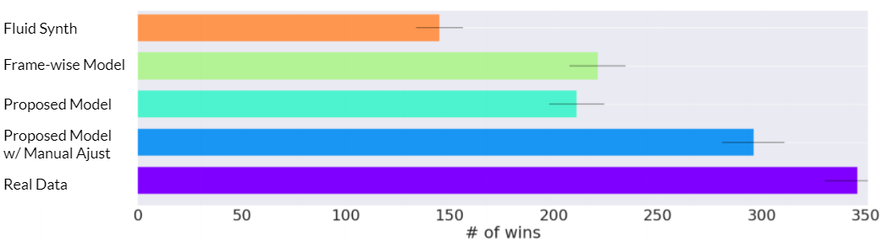
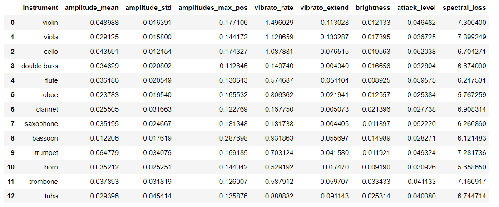

Molto Vibrato: Note-based Expressive Control
Overview
Abstract & Introduction
Model Architecture
Listening Test
MIDI Synthesis
- Test-set Synthesis
- Violin Performance Synthesis
- Bach Quartet Synthesis
Note Expression Control
Note-base Tone Transfer
Abstract & Introduction
PaperModel Architecture
Listening Test
Preference Test on Test-set MIDI Synthesis Result (imaginary)
The listening test results on Test-set MIDI Synthesis. All the audio samples below are generated with only MIDI from test-set as input. Frame-wise model refers to the loudness and f0 autoregressive generation model proposed earlier.
MIDI Synthesis
In this section, the MIDI synthesis results are presented. All the audio samples below are generated with only MIDI as input. The note expression generator first predicts the note expression parameters for each note in the MIDI. The synthesizer parameters generator then predicts frame-wise synthesizer parameters given MIDI and note expression parameters. The final audio is synthesized by the DDSP module.
Test-set Synthesis
The instrument performance synthesized with MIDI input obtained from test-set. The results are compared with original recording and a free midi synthesizer (Fluidsynth - TimGM6mb.sf2).
| Violin - Original | Violin - Proposed Method | Violin - Fluidsynth |
|---|---|---|
| Cello - Original | Cello - Proposed Method | Cello - Fluidsynth |
|---|---|---|
| Trumpet - Original | Trumpet - Proposed Method | Trumpet - Fluidsynth |
|---|---|---|
| Oboe - Original | Oboe - Proposed Method | Oboe - Fluidsynth |
|---|---|---|
| Flute - Original | Flute - Proposed Method | Flute - Fluidsynth |
|---|---|---|
| Saxophone - Original | Saxophone - Proposed Method | Saxophone - Fluidsynth |
|---|---|---|
Violin Performance Synthesis with Music Score input
The instrument performance synthesized with MIDI input obtained from internet which never appears in the dataset.
| BMV 1004 - Violin | BMV 1007 - Violin |
|---|---|
Bach Quartet Synthesis
The quartet performance synthesized with MIDI input from Bach Chorales using four instruments. The volume of four parts are mixed as: Soprano 100%, Alto 100%, Tenor 100%, and Bass 100% (will change later). Here, we present three types of instrument ensemble.
String Set
| Ensemble |
|---|
| Soprano - Violin | Alto - Viola | Tenor - Cello | Bass - Double Bass |
|---|---|---|---|
BrassWind Set
| Ensemble |
|---|
| Soprano - Trumpet | Alto - French Horn | Tenor - Trombone | Bass - Tuba |
|---|---|---|---|
Woodwind Set
| Ensemble |
|---|
| Soprano - Flute | Alto - Oboe | Tenor - Clarinet | Bass - Bassoon |
|---|---|---|---|
RMSE and Spectral Loss of Test-set Synthesis
Below we present the Root Mean Square Error (RMSE) and spectral loss of the test-set MIDI synthesis comparing to the ground-truth. The number reported under each note expression control is the note-wise RMSE of the ground-truth and the output of note expression generator. The spectral loss reported are calculated between the final synthesized audio and the ground-truth audio.
Note Expression Control
In this section we present qualitative results and quantitative results showing the effect of the note expression control parameters.
Please check here for details.
Note-base Tone Transfer
This section presents audio samples of note-base tone transfer results compared with original DDSP timbre transfer results.
The proposed system synthesize audio based on note-wise features. Thus, note transfer can be done by first extracting note boundaries and control parameters from source audio, and synthesize audio using target instrument. To synthesize audio in the target instrument, each extracted control parameter is shifted by the mean of the control parameters in the dataset of the target instrument. Comparing to original DDSP tone transfer which use frame-wise acoustic features, the proposed method can generate more idiomatic and realistic tone transfer results.
Please check here for details.